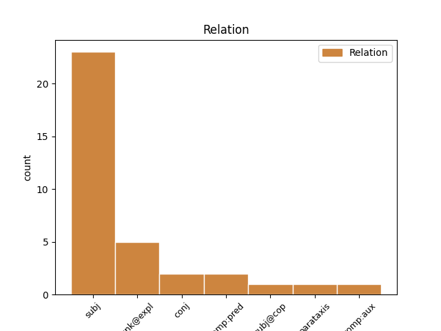
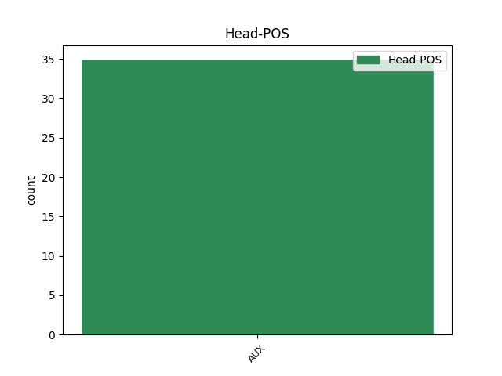
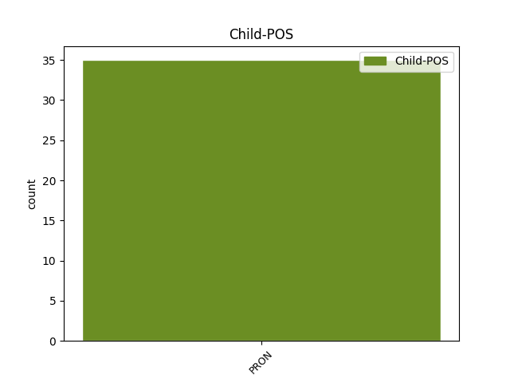

Distribution of features within this leaf



Agreement Rules sorted by frequency.
- When the dependent token is the subject(subj) of the head token, and the head token is AUX and the dependent token is PRON.
1 Setu setu AUX _ Number=Sing|Person=2 0 _ _ _
2 eh _ _ _ _ 0 _ _ _
3 eus eus PRON _ Number=Sing|Person=2 1 subj _ _
4 bet _ _ _ _ 0 _ _ _
5 tud _ _ _ _ 0 _ _ _
6 é _ _ _ _ 0 _ _ _
7 soñjal _ _ _ _ 0 _ _ _
8 e _ _ _ _ 0 _ _ _
9 vehe _ _ _ _ 0 _ _ _
10 adsavet _ _ _ _ 0 _ _ _
11 ar _ _ _ _ 0 _ _ _
12 strollad _ _ _ _ 0 _ _ _
13 e _ _ _ _ 0 _ _ _
14 - _ _ _ _ 0 _ _ _
15 raok _ _ _ _ 0 _ _ _
16 pell _ _ _ _ 0 _ _ _
17 . _ _ _ _ 0 _ _ _
1 A _ _ _ _ 0 _ _ _
2 - _ _ _ _ 0 _ _ _
3 raok _ _ _ _ 0 _ _ _
4 da _ _ _ _ 0 _ _ _
5 se se PRON _ Case=Acc|Person=3|PronType=Prs|Reflex=Yes|Strength=Weak 6 unk@expl _ _
6 e fi AUX _ Mood=Ind|Number=Sing|Person=3|Tense=Pres|VerbForm=Fin 0 _ _ _
7 raed _ _ _ _ 0 _ _ _
8 anezhi _ _ _ _ 0 _ _ _
9 Yaou _ _ _ _ 0 _ _ _
10 VI _ _ _ _ 0 _ _ _
11 pe _ _ _ _ 0 _ _ _
12 Hestia _ _ _ _ 0 _ _ _
13 . _ _ _ _ 0 _ _ _
1 Noel _ _ _ _ 0 _ _ _
2 Gallagher _ _ _ _ 0 _ _ _
3 ( _ _ _ _ 0 _ _ _
4 gitarour _ _ _ _ 0 _ _ _
5 Oasis _ _ _ _ 0 _ _ _
6 ) _ _ _ _ 0 _ _ _
7 a _ _ _ _ 0 _ _ _
8 voe _ AUX _ Gender=Masc|Number=Sing|Person=3|Tense=Past 0 _ _ _
9 é é PRON _ Gender=Masc|Number=Sing|Person=3 8 comp:pred _ _
10 seniñ _ _ _ _ 0 _ _ _
11 getoñ _ _ _ _ 0 _ _ _
12 ivez _ _ _ _ 0 _ _ _
13 , _ _ _ _ 0 _ _ _
14 er _ _ _ _ 0 _ _ _
15 sonenn _ _ _ _ 0 _ _ _
16 " _ _ _ _ 0 _ _ _
17 Keep _ _ _ _ 0 _ _ _
18 What _ _ _ _ 0 _ _ _
19 Ya _ _ _ _ 0 _ _ _
20 Got _ _ _ _ 0 _ _ _
21 " _ _ _ _ 0 _ _ _
22 ( _ _ _ _ 0 _ _ _
23 single _ _ _ _ 0 _ _ _
24 ) _ _ _ _ 0 _ _ _
25 . _ _ _ _ 0 _ _ _
1 Breudeur _ _ _ _ 0 _ _ _
2 ha hve AUX _ Mood=Ind|Number=Sing|Person=3|Tense=Pres|VerbForm=Fin 0 _ _ _
3 c'hoarezed _ _ _ _ 0 _ _ _
4 he he PRON _ Case=Nom|Gender=Masc|Number=Sing|Person=3|PronType=Prs 2 parataxis _ _
5 doa _ _ _ _ 0 _ _ _
6 : _ _ _ _ 0 _ _ _
7 Agave _ _ _ _ 0 _ _ _
8 , _ _ _ _ 0 _ _ _
9 Semele _ _ _ _ 0 _ _ _
10 , _ _ _ _ 0 _ _ _
11 Polydoros _ _ _ _ 0 _ _ _
12 , _ _ _ _ 0 _ _ _
13 Aotonoe _ _ _ _ 0 _ _ _
14 . _ _ _ _ 0 _ _ _
1 Un _ _ _ _ 0 _ _ _
2 adstêr _ _ _ _ 0 _ _ _
3 eo _ _ _ _ 0 _ _ _
4 d'ar _ _ _ _ 0 _ _ _
5 Saena _ _ _ _ 0 _ _ _
6 war _ _ _ _ 0 _ _ _
7 he _ _ _ _ 0 _ _ _
8 lez _ _ _ _ 0 _ _ _
9 kleiz _ _ _ _ 0 _ _ _
10 , _ _ _ _ 0 _ _ _
11 ha _ AUX _ Mood=Ind|Number=Sing|Person=3|Tense=Pres|VerbForm=Fin 0 _ _ _
12 roet _ _ _ _ 0 _ _ _
13 he _ PRON _ Case=Nom|Gender=Masc|Number=Sing|Person=3|PronType=Prs 11 comp:aux _ _
14 deus _ _ _ _ 0 _ _ _
15 hec'h _ _ _ _ 0 _ _ _
16 anv _ _ _ _ 0 _ _ _
17 d'an _ _ _ _ 0 _ _ _
18 departamant _ _ _ _ 0 _ _ _
19 gall _ _ _ _ 0 _ _ _
20 Yonne _ _ _ _ 0 _ _ _
21 . _ _ _ _ 0 _ _ _
Disagree Examples:
1 Benny _ _ _ _ 0 _ _ _
2 Moré _ _ _ _ 0 _ _ _
3 zo _ _ _ _ 0 _ _ _
4 ur _ _ _ _ 0 _ _ _
5 c'haner _ _ _ _ 0 _ _ _
6 eus _ _ _ _ 0 _ _ _
7 Kuba _ _ _ _ 0 _ _ _
8 , _ _ _ _ 0 _ _ _
9 a _ _ _ _ 0 _ _ _
10 vez _ _ _ _ 0 _ _ _
11 gwelet _ _ _ _ 0 _ _ _
12 evel _ _ _ _ 0 _ _ _
13 an _ _ _ _ 0 _ _ _
14 hini _ _ _ _ 0 _ _ _
15 brasañ _ _ _ _ 0 _ _ _
16 a _ _ _ _ 0 _ _ _
17 viskoazh _ _ _ _ 0 _ _ _
18 , _ _ _ _ 0 _ _ _
19 abalamour _ _ _ _ 0 _ _ _
20 moarvat _ _ _ _ 0 _ _ _
21 , _ _ _ _ 0 _ _ _
22 m'en _ PRON _ Number=Sing|Person=1 23 subj _ _
23 deus _ AUX _ Number=Sing|Person=2 0 _ _ _
24 gallet _ _ _ _ 0 _ _ _
25 chom _ _ _ _ 0 _ _ _
26 feal _ _ _ _ 0 _ _ _
27 d'an _ _ _ _ 0 _ _ _
28 doareoù _ _ _ _ 0 _ _ _
29 - _ _ _ _ 0 _ _ _
30 kanañ _ _ _ _ 0 _ _ _
31 kozh _ _ _ _ 0 _ _ _
32 ha _ _ _ _ 0 _ _ _
33 krouiñ _ _ _ _ 0 _ _ _
34 doareoù _ _ _ _ 0 _ _ _
35 nevez _ _ _ _ 0 _ _ _
36 en _ _ _ _ 0 _ _ _
37 e _ _ _ _ 0 _ _ _
38 amzer _ _ _ _ 0 _ _ _
39 . _ _ _ _ 0 _ _ _
1 E _ _ _ _ 0 _ _ _
2 Sina sina PRON _ Case=Nom|Number=Sing|Person=2|PronType=Prs 3 subj@cop _ _
3 e lema AUX _ Mood=Ind|Number=Sing|Person=3|Tense=Pres|VerbForm=Fin|Voice=Act 0 _ _ _
4 kavas _ _ _ _ 0 _ _ _
5 repu _ _ _ _ 0 _ _ _
6 . _ _ _ _ 0 _ _ _
1 Da _ _ _ _ 0 _ _ _
2 noz noz PRON _ Case=Dat|Gender=Masc|Number=Plur|Person=1|PronType=Prs 3 subj _ _
3 e fi AUX _ Mood=Ind|Number=Sing|Person=3|Tense=Pres|VerbForm=Fin 0 _ _ _
4 tistro _ _ _ _ 0 _ _ _
5 - _ _ _ _ 0 _ _ _
6 hi _ _ _ _ 0 _ _ _
7 d’he _ _ _ _ 0 _ _ _
8 zi _ _ _ _ 0 _ _ _
9 . _ _ _ _ 0 _ _ _
1 Peogwir _ _ _ _ 0 _ _ _
2 o _ _ _ _ 0 _ _ _
3 deus _ _ _ _ 0 _ _ _
4 bet _ _ _ _ 0 _ _ _
5 c'hoant _ _ _ _ 0 _ _ _
6 da _ _ _ _ 0 _ _ _
7 berc'hennañ _ _ _ _ 0 _ _ _
8 kalz _ _ _ _ 0 _ _ _
9 broioù _ _ _ _ 0 _ _ _
10 all _ _ _ _ 0 _ _ _
11 war _ _ _ _ 0 _ _ _
12 ar _ _ _ _ 0 _ _ _
13 bed _ _ _ _ 0 _ _ _
14 eo is PRON _ Case=Abl|Gender=Masc|Number=Sing|Person=3|PronType=Prs 16 subj _ _
15 en _ _ _ _ 0 _ _ _
16 em em AUX _ Number=Sing|Person=1 0 _ _ _
17 gannet _ _ _ _ 0 _ _ _
18 broioù _ _ _ _ 0 _ _ _
19 Europa _ _ _ _ 0 _ _ _
20 kenetrezo _ _ _ _ 0 _ _ _
21 . _ _ _ _ 0 _ _ _
1 Amañ _ _ _ _ 0 _ _ _
2 e e AUX _ Mood=Ind|Number=Sing|Person=3|Polarity=Neg|VerbForm=Fin 0 _ _ _
3 vo vo PRON _ Number=Plur|Person=2|PronType=Prs 2 subj _ _
4 kavet _ _ _ _ 0 _ _ _
5 ar _ _ _ _ 0 _ _ _
6 skrid _ _ _ _ 0 _ _ _
7 , _ _ _ _ 0 _ _ _
8 met _ _ _ _ 0 _ _ _
9 ivez _ _ _ _ 0 _ _ _
10 ar _ _ _ _ 0 _ _ _
11 c'hanaouennoù _ _ _ _ 0 _ _ _
12 , _ _ _ _ 0 _ _ _
13 gant _ _ _ _ 0 _ _ _
14 an _ _ _ _ 0 _ _ _
15 tonioù _ _ _ _ 0 _ _ _
16 da _ _ _ _ 0 _ _ _
17 heul _ _ _ _ 0 _ _ _
18 . _ _ _ _ 0 _ _ _